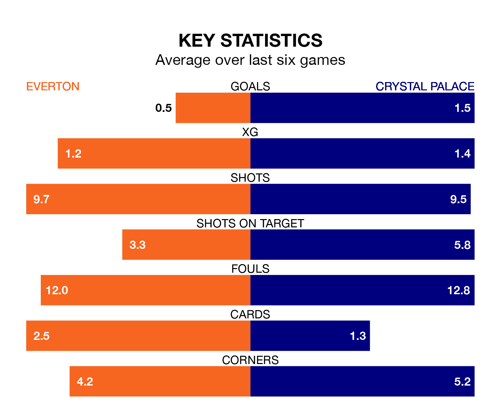

Everton face Crystal Palace at Goodison Park on late Monday looking to secure a first win in eight Premier League games.
The Toffees have lost four and drawn three matches since they last earned three points – against Burnley on December 16.
They face a Palace side who have won two and drawn one over that time.
In Jordan Pickford, Everton can rely on one of the league's safest pair of hands. He has kept eight clean sheets in his 24 appearances this season, and no 'keeper has prevented the opposition scoring more often in the Premier League.
In Palace's net, Sam Johnstone has five clean sheets in 16 games.
In the last 10 years, Everton and Palace have played each other on 23 occasions. Everton won 10 of them, Palace four, and they drew nine times.
On average, the Toffees scored 1.4 goals and the Eagles 1.1 in those matches.
Their last meeting was on January 17, when Everton won 1-0 at home.
The Eagles are 16th in the table after 24 games, of which they have won six and drawn six, earning 24 points.
The Toffees are four places ahead of the visitors in 12th, with eight wins and five draws putting them on 29 points.
With 26 goals in 24 games so far this season, the home team are the league's third-lowest scorers with 1.1 goals per game. But they are conceding fewer than average too, letting in 32 goals at a rate of 1.3 per game.
Palace are also below average scorers, with 1.1 goals per game, compared to a league average of 1.6. They have conceded 1.8 goals per game.
Everton's last match was on February 10, a 2-0 loss against Manchester City.
Palace lost 3-1 against Chelsea last time out, on February 12, with Jefferson Lerma on the scoresheet.
Updated: 13:04 (UTC), 16/02/24